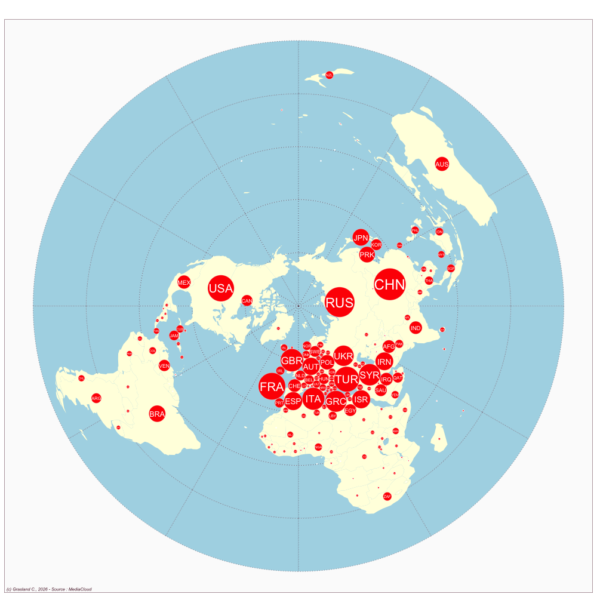

Germany
- Website : Frankfruter Allgemeine Zeitung
Scale
- Global
- National
Topics
- General news
- Political news
- Economic news
Publications
Cazzamatta R. 2018. The determinants of latin america’s news coverage in the german press. The Journal of International Communication 24: 283–304